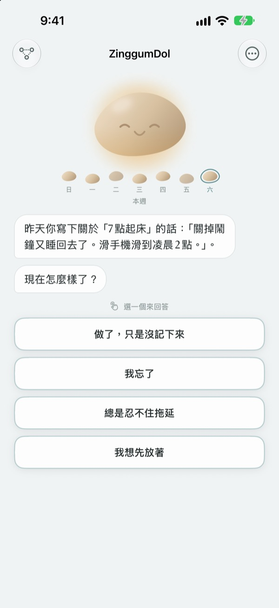
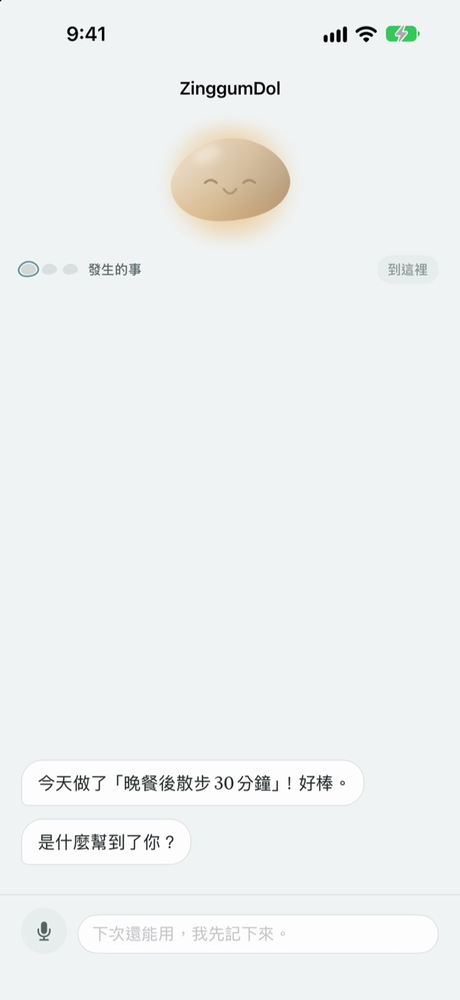
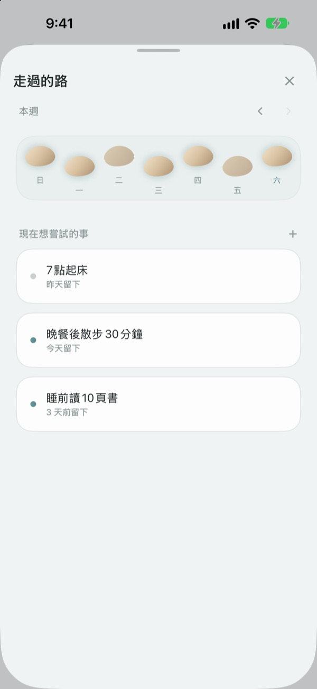
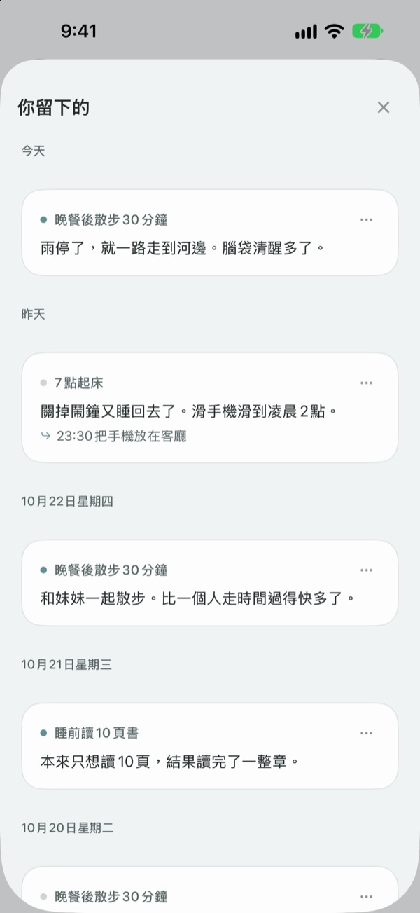

踩空一步，
不代表掉進了溪裡
沒完成目標的那天，小石子會先開口。它問的是發生了什麼，而不是你哪裡做錯了，再把發生的事和你的心情分開交還給你。
聊天、記錄和走過的路都免費。不用註冊，沒有廣告。

和小石子聊聊
今天本來打算傍晚去散步，結果沒去成。點一個回答或自己寫，小石子會像在 App 裡一樣回應你。
事情沒照計畫走的那天，你在責怪自己嗎？
錯過運動的晚上，第一個冒出來的念頭往往是「我怎麼老是這樣」。可是仔細看看，那天加了班、下了雨，你也累壞了。ZinggumDol 會分開問你那天發生了什麼、現在心情如何，再把兩者並排放在你眼前。發現是情況不允許而不是意志不夠，明天的一小步就清楚了。
小石子會先開口
設好目標後，小石子會陪你一起看著做到的日子和卡住的日子。錯過的那天，它不問「為什麼沒做」，而是問「發生了什麼」；它也記得你上次說的話，會問你後來怎麼樣了。
不想打字的日子，說出來也可以。語音在裝置上辨識，錄音不會儲存。

走過的路，鋪成一排踏腳石
一週鋪成一排踏腳石。沒踩上的那天，石頭也照樣留著，不會被抹去。
就算中間空了一兩天，也能一眼看出路還在延續。

把留下的話再拿出來看
發生的事、當時的心情、下次想試的事，依日期一筆筆累積。翻到一個同樣卡住的日子，就能看出什麼方法有用。
也能在主畫面小工具看小石子的一句話，並在你設定的時間收到回顧今天的通知。

三個步驟就能開始
- 1
寫下一個目標
像是「晚餐後散步30分鐘」。
- 2
一天結束時打開 App
小石子會問你今天過得如何。設個提醒就不會忘。
- 3
點選或寫下回答
隨時都能用
我想先放著結束。
對話會這樣進行
- 發生的事
- 只問事實：是什麼擋住了你
- 心情
- 從五個等級選出你現在的心情
- 回顧
- 小石子把發生的事和你的心情分開說給你聽
- 下一步
- 由你自己決定一件小事，五分鐘就夠
- 收尾
- 心情特別低落的日子，它不再追問，只勸你先休息
任何一步都能停下，之前說的話都會保留。
聊天和記錄免費，想要更多再用 Pro
免費
- 和小石子的所有對話
- 最多三個目標
- 用說的取代打字
- 走過的路和留下的所有記錄
- 主畫面小工具與每日提醒
- 密碼鎖定
ZinggumDol Pro
- 目標數量不限
- 六種小石子質感任你挑
- 把記錄匯出成文字檔
一次購買，永久使用。不是訂閱。
對話進行中絕不會跳出付款畫面。換了裝置或重新安裝後，請在設定裡點一下「回復購買項目」。
常見問題
沒做到的日子一定要寫原因嗎？
不用。任何一步都能點 我想先放著，對話馬上結束。之前說的話會保留，下次可以接著聊。
我其實做了，App 卻說我沒做。
點 做了，只是沒記錄，小石子會坦然接受，改問你是什麼幫了忙。有用的方法會被記下，下次卡住時它會再拿出來。
我說出來的話去了哪裡？
語音在裝置上轉成文字，錄音不會儲存。在支援的裝置上，還會把句子整理得更好讀，這一步也在裝置上完成。
最多能有幾個目標？
免費可以有三個。完成的目標在「走過的路」裡 放下，就能空出位置。想要更多，需要 ZinggumDol Pro。
ZinggumDol Pro 是訂閱嗎？
不是。付一次就一直能用。換了裝置或重新安裝後，請在設定裡點 回復購買項目。
別人看得到我的記錄嗎？
不用註冊，記錄只存在你的裝置和你自己的 iCloud。可以在設定裡設密碼鎖住 App。你寫的內容不會傳給開發者。打開 App 的天數這類匿名使用統計也能在設定裡關閉。
要怎麼改提醒時間？
在設定的 每日提醒 可以開關並選擇時間。
小石子也會提起我做到過的事嗎？
會。它記得什麼幫到了你，在難熬的日子裡會提起你最近做到的事。
要怎麼刪除全部記錄？
在設定裡點 刪除所有記錄，目標和記錄會全部消失且無法復原，透過 iCloud 連結的其他裝置上也會刪除。設定和購買會保留。有 Pro 的話，可以先用 匯出記錄 存一份。
要怎麼聯絡你們？
在 App 設定裡點「傳送意見回饋」，或寫信到下方信箱。
有問題或建議？歡迎寫信到 leeo@kakao.com。